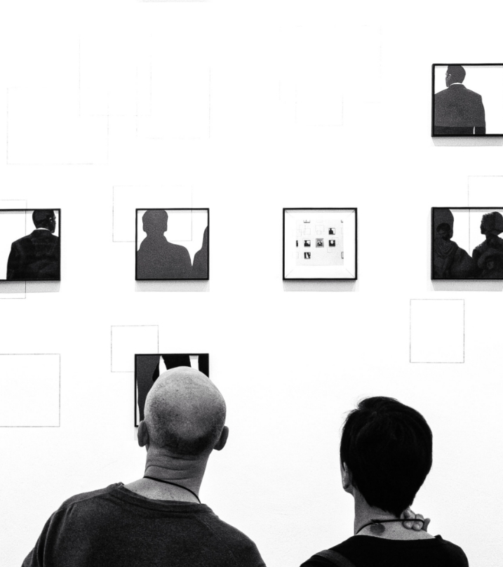

Representación
femenina en el cine
Por Jorge Llanos Rojas y Milena Ortiz Torres
Entrega Final de visualización de datos
Maestría en Humanidades Digitales, Universidad de
los
Andes
06 de Diciembre de 2023
.jpg)
Resumen
Este trabajo analiza la representación femenina en el cine, destacando el Test de Bechdel como una herramienta para evaluar la presencia activa de personajes femeninos. Este test, creado por Alison Bechdel, establece tres premisas que una película debe cumplir para superarlo. A través de visualizaciones de datos, se revela que muchas películas nominadas y ganadoras en los Oscar no pasan este test, evidenciando un patrón persistente en la industria cinematográfica, especialmente en el cine estadounidense. El trabajo no pretende adoptar una perspectiva feminista, sino utilizar el test de Bechdel como una rúbrica breve pero reveladora para analizar la representación de las mujeres en el cine.
Palabras clave: Representación femenina, Test de Bechdel, Industria cinematográfica, Visualizaciones de datos, Cine estadounidense.
Todos buscamos ocupar un sitio, convertirnos en una presencia significativa, ser una señal más o menos compleja o ambigua, pero en todo caso visible.
-Alberto Vital

Abstract
This work analyzes female representation in cinema, highlighting the Bechdel Test as a tool to assess the active presence of female characters. Created by Alison Bechdel, this test establishes three premises that a film must meet to pass. Through data visualizations, it is revealed that many Oscar-nominated and winning films fail this test, indicating a persistent pattern in the film industry, especially in American cinema. The study does not aim to adopt a feminist perspective but rather employs the Bechdel Test as a brief yet revealing rubric to analyze the representation of women in cinema.
Keywords: Female representation, Bechdel Test, Film industry, Data visualizations, American cinema.
1. Introducción
Este proyecto se enfoca en el análisis de la representación femenina en el cine, utilizando la base de datos encontrada en la plataforma kaggle, llamada: Female Representation in Cinema. La primera etapa implica examinar la evolución de los géneros cinematográficos por décadas, seguido por un análisis que se realizará en la herramienta "adventure.js", donde se destacarán las tres películas más populares de cada periodo. En la segunda etapa, se abordará el Test de Bechdel, un criterio que evalúa la representación de las mujeres en el cine, visualizando sus puntajes para obtener una comprensión más profunda de las interacciones femeninas en la trama. La tercera etapa se centrará en el porcentaje de representación de personajes femeninos en pantalla, utilizando la base de datos mencionada para explorar tendencias y cambios en la inclusión de mujeres en la narrativa cinematográfica. Finalmente, en la cuarta etapa se realizará un análisis narrativo de la escena más importante de la película más representativa según el Test de Bechdel, proporcionando una perspectiva detallada sobre la evolución de la representación femenina en el cine a lo largo del tiempo.
Etapa I: Décadas de representación femenina en el cine
Los motivos está narrada en tercera persona y dividida en seis capítulos: "La noticia", "El recuento de los hechos", "Los motivos", "Los trabajos y los días", "La búsqueda" y "Los motivos de Bayardo". El paratexto que se ilustra en la portada del libro, diseñada por Lucía de Block, ilustra la imagen de un antiguo casete con los restos de un pegote en donde se alcanza a vislumbrar el nombre de Orlando en letras cursivas. El protagonista, Bayardo Arizpe, es el "detective privado, oscuro poeta, coleccionista de primeras ediciones", colega de Los Lapidarios. Estos poetas se enfrentan a una realidad insoslayable desde su peculiar punto de vista: para pertenecer al canon de las Letras Mexicanas importan más los contubernios institucionales, las fidelidades personales y las corruptelas políticas y mucho menos la calidad artística. Entre Brull, fiel camarada de Bayardo, Los Lapidarios y Malva, la improvisada novia de Bayardo, se gesta el fracasado intento de desvelar el complot institucional.
Las razones de la contratación de Bayardo como detective privado reproducen el mismo galimatías de la novela anterior (De puño y letra). El enredo tiene todos los visos de una representación tragicómica desde el momento en que los camaradas especulan sobre una maquinación mayúscula dentro de la trama: "—IMAGÍNATE, BAYARDO... NOMÁS IMAGÍNATELO. Un sátrapa cultural finge su muerte y espera ver sus efectos en el mundo. Su propio funeral. Oculto tras cortinajes luctuosos o metido en un disfraz. —Me lo imagino, Brull. Me lo estoy imaginando" (11-12). El contrato de lectura que Ramos inserta como indicio interpretativo en su obra subraya la falsedad de un artificio por dos razones. Primero, porque traslada el nivel paródico del móvil centrado en un falaz embuste planeado por Pascasio, y segundo porque permite una fisura por donde se cuela la mordacidad genérica de la novela negra, como veremos después.
Julio César Provencio, el secretario de Cultura, es el culpable del robo y de la alteración del libro. También es el autor intelectual de la muerte de Angelita Villagrán, la secretaria personal y amante de Pascasio. Ella había transcrito puntualmente los casetes originales dictados por el poeta. La razón del hurto se origina cuando Provencio descubre que su nombre no aparece en la nómina de los autores notables que Pascasio {37} incluyera en el texto, y por tal motivo Provencio lo hurta y adultera. Pero no solo incluye su nombre en la lista, sino que también quita y pone otros a su arbitrio, "defenestrando enemigos", "eliminando frases" y "añadiendo términos" (46). Al fraudulento arrojo se agrega un tropiezo más. En el susodicho libro, o antología de autores y obras,
Orlando Pascasio había incluido algunos nombres de poetas, desconocidos para el círculo literario de Provencio. Uno de esos nombres respondía a un tal Porfirio Vigil, seudónimo de Palidez del Campo, una poeta ignorada. Si este personaje se enteraba de que su nombre había sido incluido y luego borrado, Bayardo y Los lapidarios tendrían la prueba fehaciente del fraude cometido. Como el libro póstumo habría de presentarse con todo el boato correspondiente al admirado poeta, la alteración de nombres era una amenaza legítima. Si la poeta hacía acto de presencia en pleno jolgorio y no escuchaba su nombre, Provencio y todos los partícipes del hurto quedarían bochornosamente al descubierto, no solo ante todos los familiares y colegas, sino también ante los agregados culturales, embajadores y demás personas distinguidas, y ante el presidente de la República, en caso de que acudiera al magno evento en el Palacio de Bellas Artes. La confusión acelera la tensión que provoca el apresuramiento de los actores y la comicidad de la situación. A través de un discurso ágil, paródico y festivo se contrastan los temores y las celadas entre los implicados al actuar y gesticular en un escenario tan hilarante como el de una farsa o una comedia de enredo, en donde unos desean impedir y otros desean revelar el insigne "complot cultural". Mientras Provencio lucha por ocultar el fraude, Bayardo y Los Lapidarios, La Célula o los Camaradas Resistentes planean desvelarlo. Mediante una emboscada bien planeada, el grupo acaricia la idea de formar parte de la colosal y única revelación en donde, "ahora sí", los haría formar parte de un evento institucional, aunque fuese por las razones equivocadas. El plan era lograr que Palidez del Campo accediera a presentase al evento, y como se supone que ella estaba al tanto de que su nombre estaba incluido en el famoso escrito de Pascasio, el descubrimiento de su ausencia develaría la conspiración. Esta maniobra sería, según Los Lapidarios, no solo la sensación del evento, sino además el único reconocimiento público de su existencia. Si ellos consiguiesen, mediante los casetes que Malva (la hija de Angelita y cuyo padre fuese nada menos que el egregio poeta Orlando Pascasio) había conservado, hacer retumbar la voz de Pascasio ante todo el auditorio, evidenciarían el plagio de los nombres añadidos y borrados, obteniendo así la ventaja de ser ellos quienes ofrecieran la nota cultural del año. La estratagema consistía en que Bayardo se presentase al magno evento con las grabaciones auténticas. En el momento preciso, los altoparlantes dejarían escuchar en la voz de Pascasio la nómina verdadera y no la que Julio César había reescrito. "Pero Bayardo nunca apareció con el casete grabado y la Célula se quedó esperando" (236).
{38} En este abanico de deslealtades, intrigas y suplantaciones, la traición del protagónico Bayardo es fundamental. Meses después del frustrado plan de Los Lapidarios aparece, en un suplemento cultural nacional, una insólita invitación a la "próxima edición de 'La palabra en la honda, poesía reunida de Bayardo Arizpe\'" (236). La figura del detective palidece y la del poeta resplandece. Aunque sea un desertor y renuncie a la lealtad de sus correligionarios y traicione el amor de Malva que también aguardaba su revelación como hija del poeta, su poesía y su nombre serían reconocidos a través del primer ansiado libro publicado.
Importa esta traición no solo porque es un acto que transgrede la deontología del detective de la novela policial, sino por algo más sutil pero lógico en la trama. Realmente se trata de un pase de manos que funciona como ardid y que corre a cargo del autor implícito para reforzar la duplicación del engaño: por obtener reconocimiento, se arriesga el todo por el todo. La proposición inicial del relato que comienza con la expresión "imagínate Bayardo" (acerca de una fantástica y descabellada idea de que Pascasio asistiera a su propio funeral), quizás desborda el imaginario del protagonista sobre su propia aura. La función detectivesca se trastoca por el deseo de adquirir renombre como poeta. Quizás desde entonces se fragua este oscuro deseo, primero inconsciente, para después cobrar forma y cumplimiento como acto final en la trama, en la historia y en el título de la novela.
Etapa II: Explorando el test de Bechdel
Bayardo Arizpe, por otra parte, se asemeja a los demás antihéroes del autor en tanto son ellos quienes hacen posible su propia génesis para bien y para mal. Recordemos a Bolaño (Este era un gato), Niño y Finisterre (Intramuros), Tiberiano (La mujer que quiso ser dios), Abelardo Salgado (Ricochet), al ejercer oficios relacionados con la escritura todos pueden crear su propia ficción o reconvertir el contenido del relato en la historia de su vida. En estas novelas las reacciones pasionales, arbitrarias o justas son creíbles, porque los sujetos se ven conflictuados contra las normas impuestas por la sociedad de las cuales no pueden sustraerse. La conducta que se debe seguir frente a sí mismo, como una forma de identidad personal, generalmente no coincide con lo que esperan los demás, sobre todo cuando el sentir y el actuar dependen de las jerarquías del poder y de los poderosos, o bien, cuando el individuo no permanece relativamente idéntico al grupo social y emocionalmente cohesionado; es entonces cuando las actitudes o se adaptan estratégicamente al cambio conveniente o se apartan de ellas, como es el caso que se va a discutir en Los motivos. Cada una de las fases positivas y negativas inducen y transforman el proceso {39} interpretativo que comenzara en De puño y letra y que se denuncia en esta nueva novela. Aún si el conflicto presentado en la primera queda resuelto, el acto creativo de la segunda descubre esos otros móviles que enfatizan la esfera de los escrúpulos del artista: ¿conservarse o rendirse al coqueteo de la fama?
En las dos novelas Ramos concibe a los personajes desde sus contradicciones. El narrador muestra dos formas de transgresión, la de Julio César Provencio, porque vulnera la legitimidad de su gestión como director de la Secretaría de Cultura y la culpabilidad de Bayardo Arizpe al alinearse con el poder institucional y quebrantar la ideología de su grupo. La legitimación y su contraparte, la transgresión, afecta la identidad del grupo al que pertenecen y se convierte, como afirma Van Dijk, "en parte de las estrategias de manejo de crisis, cuando los miembros del grupo y sus instituciones necesitan autolegitimación, y los otros deben ser deslegitimados" (320).
Esta operación de autolegitimación y deslegitimación es interesante en una novela con matices policiacos. Frente a la peculiar narrativa de un caso policial en donde se requiere de la falta, la pesquisa, el culpable, el detective, la reparación del daño y demás etcéteras del género, Ramos agrega el otro caso que le importa. Ese otro caso se deriva de los tinglados de una trama ejercida por una clase de artistas que para hacerse notar se vale de cualquier número de deshonestidades. La novela, en este sentido, es una radiografía de esa clase política de intelectuales que opera en el interior de una cultura institucionalizada, pero también lo es acerca del quebranto de fundamentos éticos personales. Para que las figuras (o personajes), discursos y reacciones presenten el trasunto político ejercido por distintas mafias, el autor elige el punto de vista de un personaje que se presenta como un autor frustrado, con el tono discursivo irónico, jocoso y grave. Hay que advertir que el tono irónico, además de ser una constante estilística en su narrativa, permite la distancia necesaria para hacer ostensibles las tribulaciones de un personaje que al involucrarse en un caso policiaco resulte en el objeto de su propio caso (Torres).

Los motivos se asemeja más al relato de la serie negra, a esa tradición de la literatura norteamericana no ficcional, antes que al enigma de la novela policial clásica. En la serie negra el criterio de verdad redunda en la experiencia. Como bien recuerda Ricardo Piglia en Crítica y ficción, "el investigador se lanza, ciegamente, al encuentro de los hechos, se deja llevar por los acontecimientos y su investigación produce fatalmente nuevos crímenes; una cadena de acontecimientos cuyo efecto es el desciframiento" (60). Esta resolución de la serie negra, según puntualiza Piglia, corresponde a las reacciones generadas por los personajes de Ramos. En general, se da por aceptada la tesis que avala la novela negra como un reflejo del malestar social, en especial lo dañino e insidioso que se repite en más de un complot. En Los motivos, el malestar individual replica el malestar {40} general, quizás por esto se repita una serie de complots al evidenciar que la causa de las acciones genera y tergiversa la ética supuesta. El acento actancial en la caracterización del personaje Bayardo vaticina la inversión del propósito detectivesco que culmina en la traición como la causa señalada y perseguida, además de equiparar la transgresión definitoria de la novela negra. Es decir que había un código en la novela policial: quien comete la falta es alguien que, por la deontología de su oficio, o según las reglas del género, no puede desviarse de la ley, de la moral del deber ser. En la novela negra, en cambio, existe la permisividad transgresiva de las normas.
El complot trabaja como el nudo de construcción del sentido buscado al exacerbar la complejidad inherente de ser humano ante aquello conveniente a pesar de estar en contra de sus principios. Quizás, como sugiere nuevamente Piglia, en Teoría del complot, en la novela como género policial: "... el complot ha sustituido la noción trágica de destino: ciertas fuerzas ocultas definen el mundo social y el sujeto es un instrumento de esas fuerzas que no comprende" (17). Ramos opta por una estructura de novela negra, quizás porque permite la coyuntura entre política cultural y la ficción, bajo la forma palmaria de un complot. Quizás también desee evidenciar un complot contra el complot creado por la sociedad capitalista que dice ser lo contrario de lo que es. Cuando se denuncian las consecuencias del mal, "la corrupción, el fraude, el delito político, está reforzando la idea de que se trata sólo de anomalías en una lógica que tiene la garantía de su propia autorregulación y de su visibilidad" (18-19). La traición del protagonista en contra de su grupo es un acto plausible en la trama, al concebirla desde el punto de vista del complot contra el complot generado en una institución cultural, cuyas intrigas afectan los principios por los cuales fue fundada.
Etapa III: Cifras que hablan
El vínculo indisoluble entre las representaciones de la sociedad y su contexto se logra a través de su discurso. Para que el relato de la novela exprese el contexto en donde la meritocracia, la fama o el lustre personal, importen, habría que ensayar un discurso que justifique la creencia en el quehacer de los actores involucrados. Ramos se esmera en la creación de un discurso en donde las ideologías propuestas en las obras se signifiquen como las representaciones sociales compartidas por el grupo que las crea. Si desde el inicio del relato se impone la presencia de un grupo que se autodenomina como Los Lapidarios, La Célula o La Cofradía, ya el lector podría identificarlos como un grupo de izquierda que a su vez determina la clase de epítetos que también remiten {41} a la tradición de los manifiestos literarios vanguardistas, "cuyos rasgos imprescindibles son: la provocación política o estética y la distribución o difusión estratégica... o bien el manifiesto sin su repercusión provocativa o bien el puro grito sin trascendencia ni contenido" (Vital 34). Los Lapidarios evocan manifiestos semejantes a los elaborados por los Estridentistas que lanzaban consignas al estilo de un grito de guerra poética: "Viva el mole de guajolote" era el título del segundo manifiesto estridentista del año 1923, que "casi inconscientemente, va inscribiéndose en un orden más orgánico, a la vez que va conformándose no sólo de teorías de puro resultado estético, sino también en un plano social y político" (Schneider 31). No obstante, la identificación del grupo también requiere que tales manifiestos exhiban el proceso ideológico del que forman parte a través de un léxico seleccionado, como opina Van Dijk es "el componente más obvio y también fructífero del discurso ideológico" (259). Al bautizar al grupo como la "célula" se induce la identificación con un partido comunista actuando con una fiel unidad de trabajo y un sitio determinado, aquí el lugar predilecto es una cantina, La raya en Medio, dicho sea de paso, los cafés y las cantinas han sido el lugar acostumbrado donde los poetas se han congregado, para discutir y crear a través del tiempo. Los eslóganes los definen: "Cada vez que escucho la palabra 'idea\' desenfundo una ocurrencia" (11), lo mismo sucede con los epítetos, como el de Brull, "El último bolchevique", que socarronamente lo desdice al proclamarse como "un testigo (protegido) de Jehová" (71). Este tipo de pronunciamientos, tan cómicos y conmemorativos, se reproducen a través de un cúmulo de sentencias, como la adoptada por la secretaria de Brull, Queta Perdomo, que contagiada por los discursos de La Célula exclama: "Las revoluciones las empiezan los creyentes, pero la terminan los cínicos" (79).
Los nombres de los integrantes de esta "célula" transparentan tanto el sentir del autor-persona por el pensamiento político de izquierda, como su constante interés por la Historia. El autor implícito rescata en particular el periodo que concierne a la historia de los republicanos españoles, como antes en las novelas Éste era un gato e Intramuros. Con esta intención, el narrador Bayardo nombra y presenta a quienes forman parte de su camarilla, Carlos Brull, "el comandante", es un médico descendiente de republicanos españoles, que atiende a pacientes de diferentes clases sociales, pero sobre todo de pocos recursos. Brull suma a los ideales contestatarios familiares los ecos subversivos del 68, la época cuando conoce al "camarada" Bayardo, que entonces estudiara Políticas y después Letras, y con quien, asumo, pasara horas platicando sobre aquella historia de los republicanos españoles. Los otros integrantes tienen menor peso en la historia, pero importan como expansión de la nota republicana y como respaldo de la idiosincrasia de Los Lapidarios. Modesto, el "palindromista de profesión", el poeta Campesino y Temístoles Galán son los otros {42} participantes cuyos nombres, o quizá seudónimos, se relacionan con los nombres de los sujetos reales de "aquella brigada de militares que surgiera del Partido Comunista Español y que creara auténticos combatientes durante la Guerra Civil Española" (Bennasar 356). El recuerdo de estos militantes ha quedado impreso en las letrillas citadas en la historiografía española: "Con Líster y Campesino/Con Galán y con Modesto/Con el Comandante Carlos/No hay miliciano con miedo" (358). Hay contextos afines a los modelos mentales de autentificación o de verosimilitud que permiten al lector ubicar historias y por ende persuadir sobre la veracidad sociocultural de la obra.
Las iniciales de Orlando Pascasio, por otro lado, también son pistas para inducir al lector a identificar el nombre de Octavio Paz; la mención de "Monsi", como se nombraba con afecto al escritor cronista, Carlos Monsiváis, opera en el mismo sentido, además de señalar la cercanía de un contexto literario y político mexicanos. Es interesante recordar que el mismo Paz no solo fue el premio Nobel más galardonado del país, sino que también en sus inicios fue activista de la fugaz Unión de Estudiantes Pro-Obreros y Campesinos, entre otras gestiones y obras que lo situaban durante algún tiempo en la ideología de izquierda. Con estos datos pretendo aclarar que, sin tratar de justificar nombres y acciones, sí se invita al lector a indagar las paradojas sociohistóricas en contexto; el hacer creer al lector en un parecer verdadero acerca de lo que se dice o del estatuto de quien lo dice es un asunto que siempre necesita reflexionarse. Desde este punto de vista, el discurso que imita la oralidad de los integrantes de la "célula" y de los aparentes contrincantes liderados por Julio César Provencio, tiene una función valorativa de "connotación veridictoria" (Landowski 204). Los textos artísticos son verosímiles en tanto remiten al lector a validar el contexto literario y cultural propuesto en la trama y el discurso; las proposiciones relativas a una preceptiva literaria: "Ocurrencias apodícticas" (Los motivos 12); "bonitas paradojas" (13), "palindromista de profesión" (13); "contenido y continente" (79); más nombres de autores reconocidos por todo lector, como Unamuno, García Lorca, Miguel Hernández y Nicolás Guillén, entre otros, sostienen el proyecto literario y la tendencia ideológica de Bayardo y del propio Ramos.
La credibilidad de la situación y del referente novelesco se convierten en promesa y apuesta lanzadas por el autor a través del hacer discursivo de los sujetos. La función enunciativa de cada personaje mantiene el hacer persuasivo, y puede ser creído o conjeturado por el sujeto enunciatario en su hacer interpretativo, cuando está dotado por la misma competencia cultural y literaria, o porque la trama lo conduzca a interesarse por el contexto histórico y político del arte. Al mismo tiempo, la inclusión descriptiva de sitios típicos y de espacios estipulados abre los horizontes histórico y cultural que fundamentan la intención realista del autor inmerso en la obra. La cantina, La raya, versus el Instituto de Cultura, más la advertencia de que la obra extraviada de Orlando Pascasio había "Quedado comprometida con el {43} Fondo de Cultura Económica, desde el homenaje luctuoso en Bellas Artes" (31), enriquecen los mensajes semióticos sobre las ideologías subyacentes que sirven de estímulo para que el lector haga inferencias acerca de las instituciones y las relaciones entre los miembros de los grupos antagónicos. La mención de las fechas alrededor del año 2012, y el propio comentario acerca de un periodo de elecciones cuando "todo parece indicar que el PRI regresaba a Los Pinos, a pesar de que el candidato opositor, momificado por la segunda derrota, seguía prometiendo a sus fieles ocupar Palacio Nacional" (28), respaldan un contenido nacional no solo importante para la trama, sino también para gestionar un evento comunicativo sobre una situación específica de tiempo, lugar y circunstancia, cuyas características socioculturales le interesa mostrar al autor implicado. El discurso de la novela es un evento comunicativo que enuncia las dimensiones verbales y no verbales: los ademanes y las expresiones faciales descritos son ejemplos típicos de una conversación. Todo importa cuando el propósito es evidenciar el contexto ideológico del que forman parte.

Etapa IV: Explorando la esencia
Julio César había traicionado la voluntad de Orlando Pascasio, porque el sentir del secretario, era que aquel lo había defraudado. Sin embargo, la traición de Bayardo contra sus correligionarios es algo inesperado, pero aguardado y prorrogado en la esfera del modelo {46} que interpreta y representa las cualidades de una situación social relevante para cada uno de los integrantes en ambos grupos. La subjetividad del deseo personal se convierte en la objetividad de la construcción del poder. Ya no importa el contexto del cual parten, sino a donde se llega, el contexto que rodea el cómo se ven los unos ante los otros es fundamental. Hay modelos de contexto con un componente evaluativo en donde la opinión pública influye y modifica las conciencias individuales. En la naturaleza personal y social de cada sujeto (Bayardo y Provencio) influye y pesa por igual el contexto que los unifica y separa. Ramos nos presenta una específica situación social, cultural y política como un modelo de experiencia muy gastada entre las élites artísticas. El conocimiento y la creencia sociocultural fundamentan y actualizan los modelos de contexto en relación con la organización política de los clanes. El dominio ideológico que impulsa la lucha, los conflictos y los intereses de cada uno están protegidos por el grupo como "su dominio, en el cual otros grupos no deberían interferir" (Van Dijk 271). La sugerencia es que el Estado no debería interferir, limitar o coaccionar el contexto del arte. La traición ejercida por los integrantes de cada grupo en realidad la ejercen contra el Estado. Los soportes del Estado (desde galardones y vestimenta hasta oficinas y subalternos) generan empresas sociales, simbólicas y por ende ideológicas, y todas están representadas en los contextos en donde la afiliación es importante. El Estado, sin embargo, al institucionalizar las afiliaciones, ejerce un control en donde las creencias ya no se autocontrolan y solo reproducen lo autorizado. Nadie puede desatender los estatutos a riesgo de que se le margine o desacredite, como les sucedió a Provencio y a Bayardo. Quedaría por argumentarse cuál sería el papel del poeta Orlando Pascasio ante el Estado mexicano.
El dilema del artista que esta novela pone en escena destaca la poca autonomía del arte literario cuando depende del mecenazgo de turno. Si no basta con que el artista se subyugue a los cargos del poder u ocupe un lugar distinguido en la propia institución, será porque la libertad individual y la atadura social es una contradicción, una paradoja de origen. Es el caso de Julio César que, al ocupar el cargo de Secretario de Cultura, presupone que ha cumplido con los imperativos impuestos por la misma actividad normativa que la autoridad le ha adjudicado a través de la figura de Orlando Pascasio. Provencio está convencido de que la relaciones establecidas a través del cargo se cumplen al representar un ejercicio cultural en el seno del Estado. Desde su punto de vista, sus funciones son consecuentes con los imperativos impuestos. Cuando sus deseos y expectativas se frustran es porque sus creencias {47} colisionan con la ideología del valor cultural. No obstante, esta seguridad de pertenencia al Parnaso literario ya no dependía del sistema político del grupo, sino del "santificado ungüento de la palabra escrita de Orlando Pascasio" (75). La situación del poeta y mentor que deja a Provencio fuera del grupo de los elegidos corrobora el hecho de que las posiciones sociales pueden trastocarse, mas esa flexibilidad situacional y personal parece también indicar que aun los miembros que pertenecen a un grupo deben afrontar imprevistos. No existe en el contexto del Estado algo así como un "sentimiento colectivo" que prevenga deslealtades o, paradójicamente, que admita intrusos como Bayardo.
Conclusiones
¿Quién es el supremo manipulador de la intriga, Orlando Pascasio, Bayardo Arizpe o Julio César Provencio? Pascasio cree escribir un libro en donde la glorificación de unos no tendría por qué afectar a otros. Julio César urde una conspiración en la creencia de que, si acataba los usos de las reglas representadas por la Secretaría de Cultura, recibiría como beneficio el reconocimiento genuino de Pascasio. Bayardo, por el contrario, cree ser el antípoda del status quo y, sin embargo, sucumbe ante el mismo. Ya que Orlando Pascasio ha muerto, Provencio y Bayardo se identifican con el vasto mundo de las prácticas desleales o de los símbolos acuñados por las organizaciones políticas donde la noción misma de cultura es un término tan preciso como vago. Y esto es cierto en la cultura política de México como en cualquier otra parte del orbe.

Los motivos de Bayardo corresponden de manera legítima a los motivos aludidos que muchos artistas pueden expresar. La novela abunda en alusiones a personajes connotados en las letras y en la política nacional; en la enumeración de calles, lugares, edificios, que corresponden a la ciudad de México, y quizás también a esa idiosincrasia mexicana ambiguamente tipificada por el poeta Octavio Paz. Esta creación visionaria de nuestra idiosincrasia acierta en señalar la abstracción del término cultura. El mérito de fabular un aspecto verosímil de esta abstracción impone la pregunta acerca de las formas y perspectivas de nuestra realidad, "porque el mundo existe independientemente de nuestras representaciones y por ende no implica que haya un léxico privilegiado para describirlo (Searle 164). En Los motivos... se discurre el peso interpretativo de la realidad a través de una cosmovisión relativa al sino y al quehacer literarios según el tiempo, el lugar y las circunstancias, equidistante a los modelos mentales provenientes de la interacción con otras interpretaciones compartidas por escritores, colegas y pensadores, cuyos relatos históricos, sociales y políticos se congregan o difieren.
{48} Ramos configura la imagen de una microsociedad histórico-literaria a través de la herramienta básica de todo poeta, de la palabra, del discurso entendido no solo como soporte, sino como un sistema de significación que, como tal, refleja la construcción (o reconstrucción) del entramado social que a todos los involucrados con el fenómeno literario interesa. Porque hay una comunicación intersubjetiva que hace creer en entelequias o en delirios, es que se requiere de cosmovisiones que lo alerten. Las obras semejantes a la presente persiguen y muestran el largo proceso reflexivo acerca de si un autor literario tiene una función social, si su obra tiene la capacidad de producir ciudadanos críticos, sin aseverar que la literatura deba cumplir tales menesteres.
Bibliografía
- Bennasar, Bartolomé, coordinador. Historia de los españoles. Crítica, 1989.
- Camps, Martín. "Luis Arturo Ramos. De puño y letra". Lamás médula. Revista de cultura, enero 31, 2016, https://lamasmedula.com.ar/2016/01/31/luis-arturo-ramos-de-puno-y-letra/
- Camps, Martín y Jose Antonio Moreno Montero, compiladores. Acercamientos a la narrativa de Luis Arturo Ramos, Universidad Autónoma de Cd. Juárez, 2005.
- Dijk, van Teun. Ideología. Una aproximación interdisciplinaria. Traducido por Lucrecia Berrone de Blanco, Gedisa, 2000.
- Freud, Sigmund. El malestar en la cultura. Traducido por Luis López Ballesteros, Alianza, 1996.
- García Díaz, Teresa, coordinadora. La poética de la percepción y los intersticios de la memoria: Luis Arturo Ramos, Universidad Veracruzana, 2012.
- Landowski, Eric. "Sinceridad, confianza e intersubjetividad". La sociedad figurada. Ensayos de sociosemiótica, traducido por Luisa Ruiz Moreno, FCE / BUAP,1993.
- Piglia, Ricardo. Crítica y ficción. Anagrama, 2015.
- ———. Teoría del complot. Maté, 2007.
- Ramos, Luis Arturo. De puño y letra. Cal y Arena, 2015.
- ———. Los motivos de Bayardo. Lectorum/Eón, 2019.
- Saer, Juan José. El concepto de ficción. Textos polémicos contra los prejuicios literarios Planeta, 1999.
- Searle, John R. La construcción de la realidad social. Traducido por Antoni Domenech, Paidós, 1997.
- Schneider, Luis Mario. "El estridentismo. Una literatura de la estrategia." La palabra y el hombre. Revista de la Universidad Veracruzana, Nueva época, octubre-diciembre de 1981.
- Torres, Vicente Francisco. "Todos los escritores tienen un precio", El espejo del poder, mayo 5, 2020, https://espejodelpoder.com/2020/05/20/todos-los-escritores-tienen-un-precio-los-motivos-de-bayardo-de-luis-arturo-ramos.
- Vital, Alberto. La cama de Procusto. UNAM, 1996.